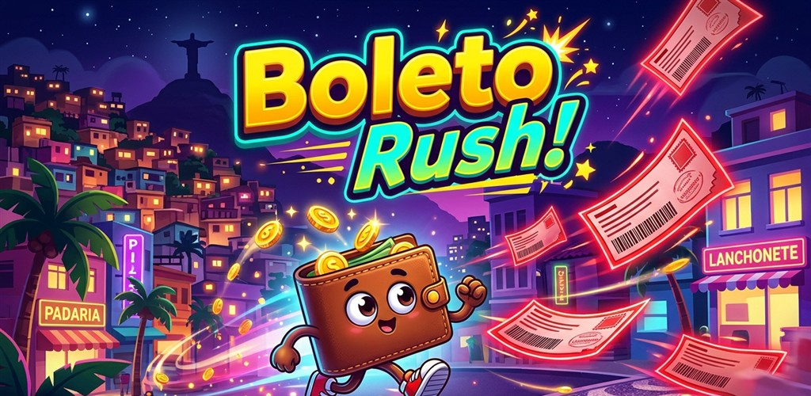

ANDROID · EM TESTES
Boleto Rush!
Um arcade brasileiro em que desviar dos boletos vira desafio: moedas, combos, partidas curtas e busca por recordes. O modo de testes não representa lançamento público na loja.
PRÓXIMA ERA / APPS & JOGOS
Conheça nossos experimentos, jogos e ferramentas. Aqui você acompanha o que já pode explorar, o que está em testes e o que ainda estamos construindo — sem prometer um download que não existe.
Projetos próprios · Desenvolvimento contínuo · Informações atualizadas por versão editorial
EXPERIÊNCIAS PARA CONHECER
Acesso, páginas públicas e políticas de privacidade são indicados individualmente.

ANDROID · EM TESTES
Um arcade brasileiro em que desviar dos boletos vira desafio: moedas, combos, partidas curtas e busca por recordes. O modo de testes não representa lançamento público na loja.
ANDROID · EM TESTES
RPG de fantasia sombria com combates táticos por turnos, relíquias, classes e escolhas que moldam a jornada. Conheça a página pública do projeto antes de uma futura instalação.

ANDROID E WINDOWS · BETA DISPONÍVEL
Organize seus jogos por console, explore capas e favoritos e teste a navegação por controles. A versão beta está em desenvolvimento contínuo e algumas funções ainda dependem de validação em dispositivos físicos.
Aplicação para bibliotecas próprias. Não inclui ROMs, BIOS nem emuladores; sincronização de saves entre plataformas ainda não está homologada.
A versão beta atual e os requisitos estão disponíveis no portal oficial.
NOSSO LABORATÓRIO
Esses projetos aparecem aqui como acompanhamento de criação. Não há link de instalação pública homologado neste catálogo.
JOGO DE CARTAS · EM DESENVOLVIMENTO
Duelo de cartas com personagens, humor brasileiro e mecânicas que evoluem a cada rodada de testes.
PLATAFORMA 2D · EM DESENVOLVIMENTO
Jogo autoral de plataforma e desafios em cenários inspirados no cotidiano brasileiro.
ROBLOX · EM DESENVOLVIMENTO
Competição de ninhos, criaturas e estratégia, ainda em ciclos de implementação e testes.
ACOMPANHE A PRÓXIMA ERA
Envie sugestões ou interesse em testes pela nossa página de contato. A disponibilidade de novas versões será informada somente quando confirmada.